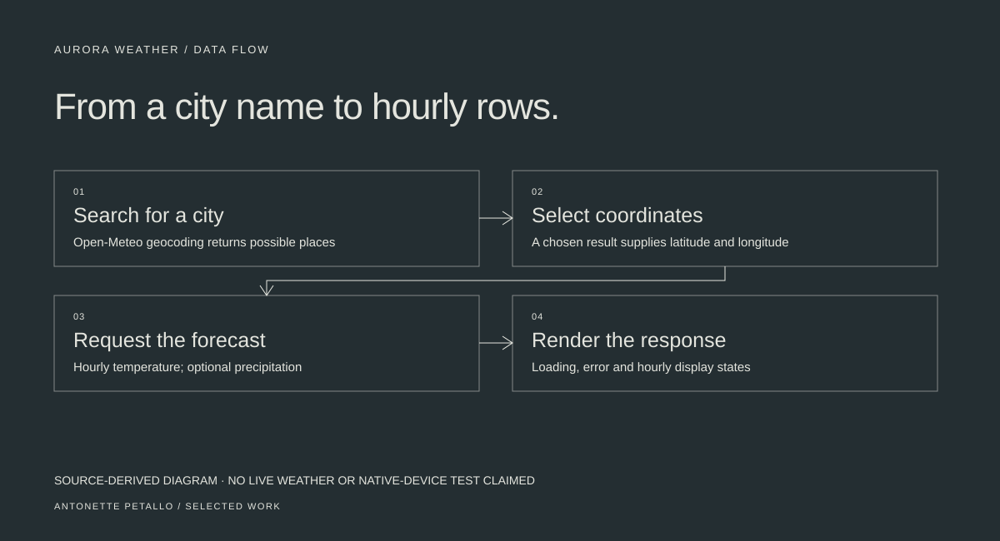

02 / MOBILE & API INTEGRATION
ANTONETTE PETALLOAurora Weather.
A React Native learning project connecting city search to an hourly forecast through Open-Meteo.
- Context & contribution
- Independent learning project
- Tools & methods
- React Native, Expo, JavaScript, Open-Meteo
- Current status
- Source available · no app-store release claimed

A city name is only the beginning.
The task is simple from a person’s point of view: search for a city and see the weather. Underneath that interaction, the app needs to disambiguate places, turn a selection into coordinates, and request the right forecast data.
This learning project explores that sequence in React Native. The source includes city search, recent-search chips, two hourly display modes, and explicit loading and error states.
Connect two services through one choice.
A city query goes to Open-Meteo’s geocoding endpoint. Selecting a result supplies latitude and longitude for the forecast endpoint. Switching between temperature-only and temperature-plus-precipitation changes the requested hourly fields.
- React state separates city results, the selected place, forecast rows and loading states.
- FlatList renders hourly rows; Pressable and TextInput handle selection and search.
- Recent city queries stay in memory, with a maximum of eight entries.
- Network failures produce a readable message rather than an empty result presented as success.
Small choices expose useful tradeoffs.
Recent searches are session state, not persistent storage. That keeps this exercise simple but means the list resets on reload.
The implementation takes the first 24 returned hourly values. It does not yet select the next 24 hours from the current time. Concurrent requests also need cancellation or stale-response protection before I would rely on it as a production app.
A working code exercise, not a release claim.
The repository contains the Expo project and the API integration. This portfolio’s review verified the source structure; it does not establish native-device compatibility, current API reliability or production readiness.
What this demonstrates: following data across endpoints, managing asynchronous interface states, and being able to explain the limitations of an implementation.
Evidence reviewed · October 28, 2026
Public source; no
production outcome claimed.